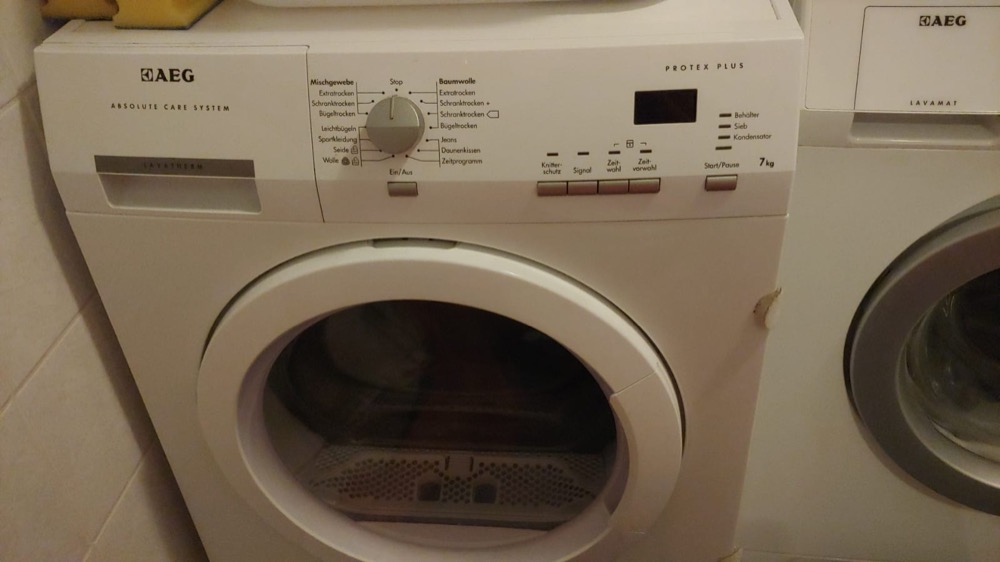
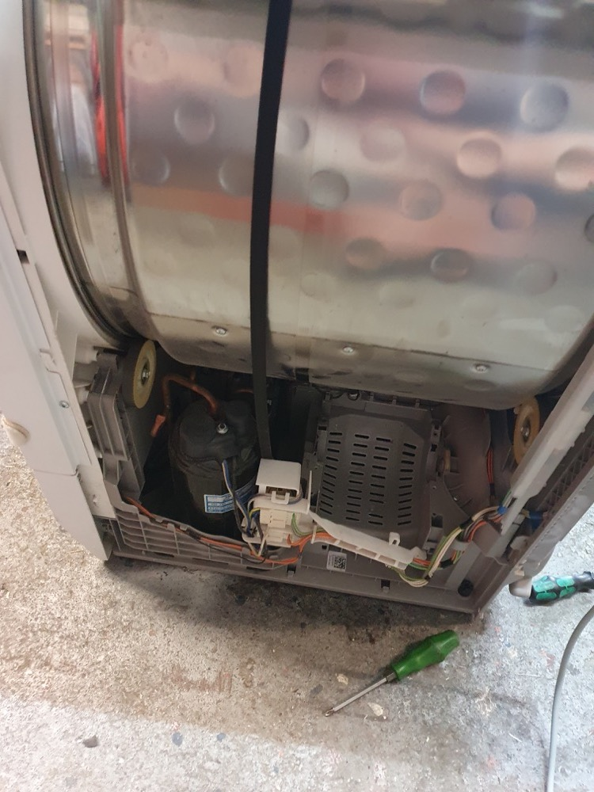
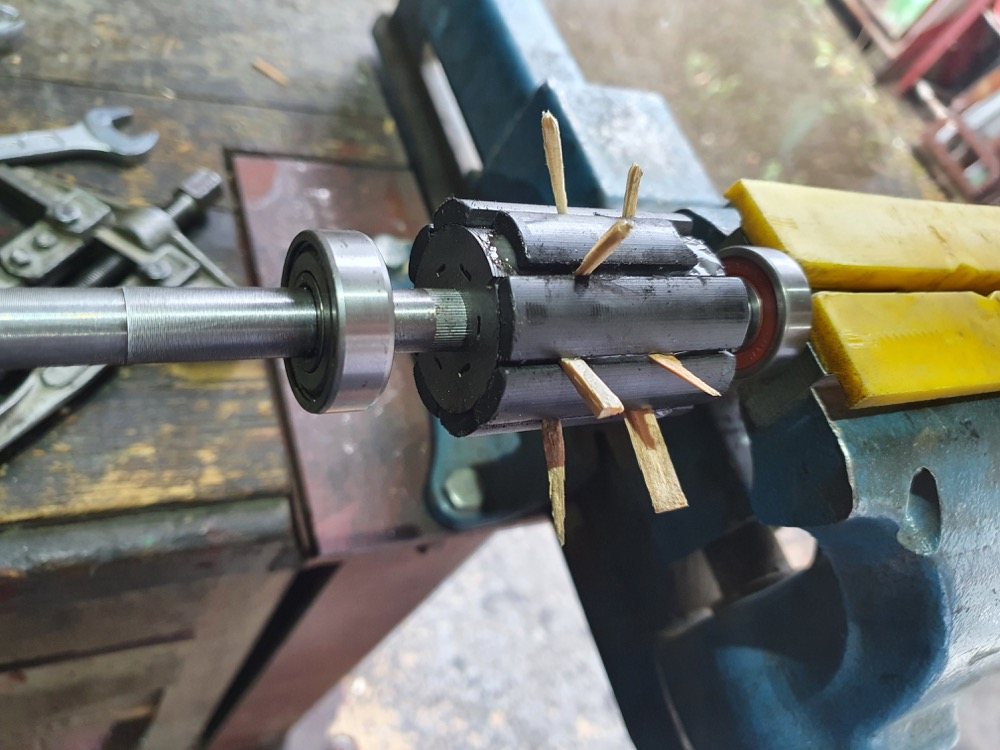

tgauweiler / AEG Dryer Bearing
Introduction
An AEG dryer was doing strange sounds while turning the barrel. During testing the drum got stock and didn’t turn anymore.

Repair
Opening
- Remove the water tank and 3 screws in the front.
- Remove two screws in the back to remove the top cover.
- Remove the side panel by removing two screws on the top and 3 in the back.
Removing the motor

- Remove the air flow cover in the back.
- Remove the spanning spring and the tension roller.
- Losen the cable tray in front of the motor
- Remove the fanwheel in the back.
- Remove the two white motor latching pieces.
- Remove the motor by pulling to the left and front.
Motor repair
After checking the motor, it was clear that one of the bearings broke, some permanent magnets got lose, cracked and some splinters jammed the rotation. Because a new motor costs around 160€ repairing is the better option.

- Should remove the old glue first
- Glue the magnets with their correct orientation and polarities in place with epoxy.
- Replace the broken bearing.
- After reassembly the motor rotated not freely.
- Sand down the fresh glued in magnets.
- Do short test run with motor outside of dryer.
- Reassemble the dryer.
Conclusion
The space between the permanent magnets and the electromagnet inside the motor is tiny and small changes by glue can cause the motor to jam. Replacing the bearing was far easier then the ones in a Miele dryer.